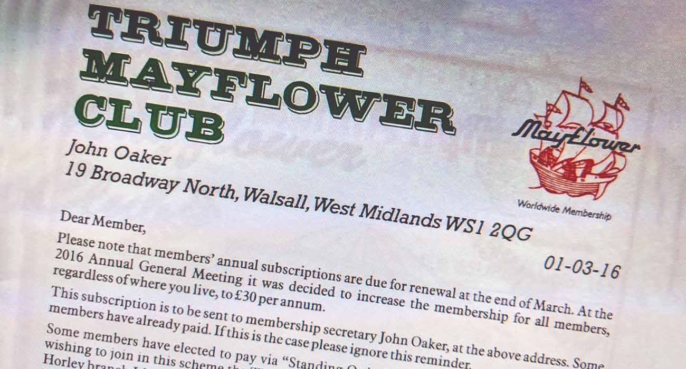
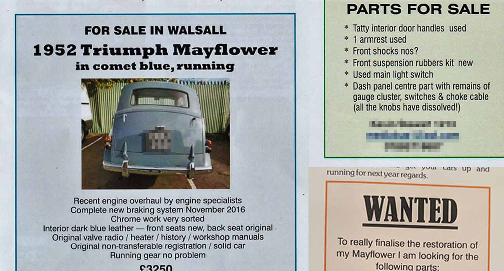
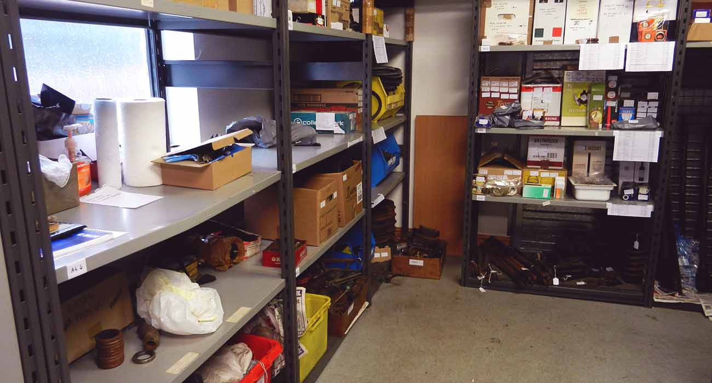
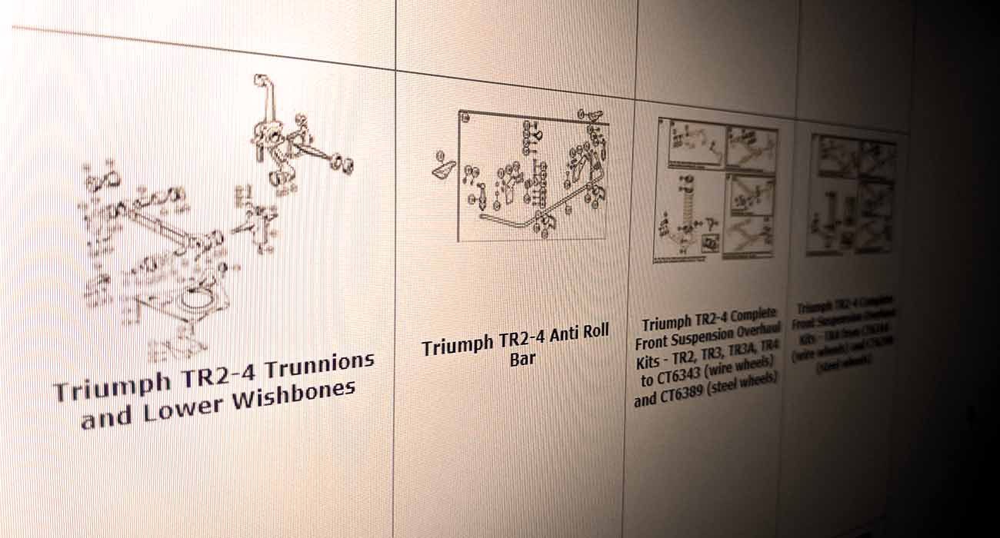

Shop
This is your one-stop shop for all things Mayflower! Whether you’re looking to renew your membership, on the hunt for a running car or a new project, official club merchandise or simply spares to keep your existing vehicle on the road, we’ve got it here…
Club membership
Joining or re-joining the club? All the information you need is here. Download a membership form or contact the secretary (John Oaker) to arrange a standing order. In future versions of the website, it is hoped that we’ll be able to provide completely electronic membership applications – something to look forward to!
Members’ classifieds
If you’re looking to buy or sell parts for your Mayflower, or even entire cars, then you might find what you’re looking for here. If an advert appears in Flower Power then it will also appear here by default, but in addition any member can contact us directly to put their advert out there, without having to wait until the next magazine is published.
Don’t forget the ‘wanted’ section as well if there’s something you’re struggling to find that someone else may just happen to have available…
Regalia
Clothing and other items of regalia are available from John Castle, the regalia secretary. You can order them and pick them up from the next rally, or get them posted to you. Why not treat your Mayflower to a snazzy official club radiator badge?

Spares
New, second-hand or re-manufactured spares are available from the spares secretary, Paul Burgess, from our new base at Lubenham in Leicestershire.
External suppliers
If Paul can’t help with spares, then you may need to contact external suppliers. Whilst the club doesn’t officially recommend or endorse any particular suppliers, members may have recommended those we list in this section as a way to keeping your Mayflower on the road.
